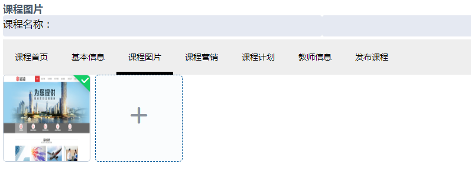
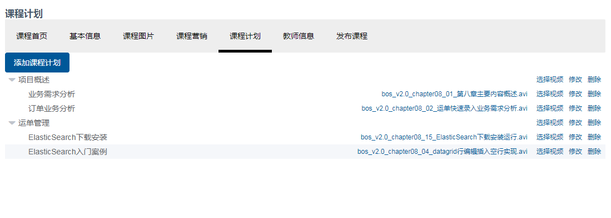

页面发布 课程管理
1 页面发布
1.1 技术方案
本项目使用MQ实现页面发布的技术方案如下：

技术方案说明：
1、平台包括多个站点，页面归属不同的站点。
2、发布一个页面应将该页面发布到所属站点的服务器上。
3、每个站点服务部署cms client程序，并与交换机绑定，绑定时指定站点Id为routingKey。
指定站点id为routingKey就可以实现cms client只能接收到所属站点的页面发布消息。
4、页面发布程序向MQ发布消息时指定页面所属站点Id为routingKey，将该页面发布到它所在服务器上的cms client。
路由模式分析如下：
发布一个页面，需发布到该页面所属的每个站点服务器，其它站点服务器不发布。
比如：发布一个门户的页面，需要发布到每个门户服务器上，而用户中心服务器则不需要发布。
所以本项目采用routing模式，用站点id作为routingKey，这样就可以匹配页面只发布到所属的站点服务器上。
页面发布流程图如下：

1、前端请求cms执行页面发布。
2、cms执行静态化程序生成html文件。
3、cms将html文件存储到GridFS中。
4、cms向MQ发送页面发布消息
5、MQ将页面发布消息通知给Cms Client
6、Cms Client从GridFS中下载html文件
7、Cms Client将html保存到所在服务器指定目录
1.2 页面发布消费方
1.2.1需求分析
功能分析：
创建Cms Client工程作为页面发布消费方，将Cms Client部署在多个服务器上，它负责接收到页面发布 的消息后从GridFS中下载文件在本地保存。
需求如下：
1、将cms Client部署在服务器，配置队列名称和站点ID。
2、cms Client连接RabbitMQ并监听各自的“页面发布队列”
3、cms Client接收页面发布队列的消息
4、根据消息中的页面id从mongodb数据库下载页面到本地
调用dao查询页面信息，获取到页面的物理路径，调用dao查询站点信息，得到站点的物理路径
页面物理路径=站点物理路径+页面物理路径+页面名称。
从GridFS查询静态文件内容，将静态文件内容保存到页面物理路径下。
1.2.2创建Cms Client工程
1、创建maven工程
pom.xml
1 | <?xml version="1.0" encoding="UTF-8"?> |
2、配置文件
在resources下配置application.yml和logback-spring.xml。
application.yml的内容如下：
1 | server: |
说明：在配置文件中配置队列的名称，每个 cms client在部署时注意队列名称不要重复
3、启动类
1 | @SpringBootApplication |
1.2.3 RabbitmqConfig配置类
消息队列设置如下：
1、创建“ex_cms_postpage”交换机
2、每个Cms Client创建一个队列与交换机绑定
3、每个Cms Client程序配置队列名称和routingKey，将站点ID作为routingKey。
1 | package com.xuecheng.manage_cms_client.config; |
1.2.4 定义消息格式
消息内容采用json格式存储数据，如下：
页面id：发布页面的id
1 | { |
1.2.5 PageDao
1、使用CmsPageRepository 查询页面信息
1 | public interface CmsPageRepository extends MongoRepository<CmsPage,String> { |
2、使用CmsSiteRepository查询站点信息，主要获取站点物理路径
1 | public interface CmsSiteRepository extends MongoRepository<CmsSite,String> { |
1.2.6 PageService
在Service中定义保存页面静态文件到服务器物理路径方法：
1 | package com.xuecheng.manage_cms_client.service; |
1.2.6ConsumerPostPage
在cms client工程的mq包下创建ConsumerPostPage类，ConsumerPostPage作为发布页面的消费客户端，监听页面发布队列的消息，收到消息后从mongodb下载文件，保存在本地。
1 | package com.xuecheng.manage_cms_client.mq; |
1.3 页面发布生产方
1.3.1 需求分析
管理员通过 cms系统发布“页面发布”的消费，cms系统作为页面发布的生产方。
需求如下：
1、管理员进入管理界面点击“页面发布”，前端请求cms页面发布接口。
2、cms页面发布接口执行页面静态化，并将静态化页面存储至GridFS中。
3、静态化成功后，向消息队列发送页面发布的消息。
1） 获取页面的信息及页面所属站点ID。
2） 设置消息内容为页面ID。（采用json格式，方便日后扩展）
3） 发送消息给ex_cms_postpage交换机，并将站点ID作为routingKey。
1.3.2 RabbitMQ配置
1、配置Rabbitmq的连接参数
在application.yml添加如下配置：
1 | spring: |
2、在pom.xml添加依赖
1 | <dependency> |
3、RabbitMQConfig配置
由于cms作为页面发布方要面对很多不同站点的服务器，面对很多页面发布队列，所以这里不再配置队列，只需要配置交换机即可。
在cms工程只配置交换机名称即可。
1 | package com.xuecheng.manage_cms.config; |
1.3.3 Api接口
在api工程定义页面发布接口：
1 | @ApiOperation("发布页面") |
1.3.4 PageService
在PageService中定义页面发布方法，代码如下：
1 | //页面发布 |
1.3.5 CmsPageController
编写Controller实现api接口，接收页面请求，调用service执行页面发布。
1 | @Override |
1.4 页面发布前端
用户操作流程：
1、用户进入cms页面列表。
2、点击“发布”请求服务端接口，发布页面。
3、提示“发布成功”，或发布失败。
1.4.1 API方法
在 cms前端添加 api方法。
1 | /*发布页面*/ |
1.4.2 页面
修改page_list.vue，添加发布按钮
1 | <el-table-column label="发布" width="80"> |
添加页面发布事件：
1 | postPage (id) { |
1.5 测试
这里测试轮播图页面修改、发布的流程：
1、修改轮播图页面模板或修改轮播图地址
注意：先修改页面原型，页面原型调试正常后再修改页面模板。
2、执行页面预览
3、执行页面发布，查看页面是否写到网站目录
4、刷新门户首页并观察轮播图是否变化。
1.6 思考
1、如果发布到服务器的页面内容不正确怎么办？
2、一个页面需要发布很多服务器，点击“发布”后如何知道详细的发布结果？
3、一个页面发布到多个服务器，其中有一个服务器发布失败时怎么办？
2 课程管理
2.1 需求分析
在线教育平台的课程信息相当于电商平台的商品。课程管理是后台管理功能中最重要的模块。本项目为教学机构提供课程管理功能，教学机构可以添加属于自己的课程，供学生在线学习。
课程管理包括如下功能需求：
1、分类管理
2、新增课程
3、修改课程
4、预览课程
5、发布课程
用户的操作流程如下：
1、进入我的课程

2、点击“添加课程”，进入添加课程界面

3、输入课程基本信息，点击提交
4、课程基本信息提交成功，自动进入“管理课程”界面，点击“管理课程”也可以进入“管理课程”界面
5、编辑图片
上传课程图片。

6、编辑课程营销信息
营销信息主要是设置课程的收费方式及价格。

7、编辑课程计划

添加课程计划：
2.2 教学方法
本模块对课程信息管理功能的教学方法采用实战教学方法，旨在通过实战提高接口编写的能力，具体教学方法如下：
1、前后端工程导入
教学管理前端工程采用与系统管理工程相同的技术，直接导入后在此基础上开发。
课程管理服务端工程采用Spring Boot技术构建，技术层技术使用Spring data Jpa（与Spring data Mongodb类似）、Mybatis，直接导入后在此基础上开发。
2、课程计划功能
课程计划功能采用全程教学。
3、我的课程、新增课程、修改课程、课程营销
我的课程、新增课程、修改课程、课程营销四个功能采用实战方式，课堂上会讲解每个功能的需求及技术点，讲解完成学生开始实战，由导师进行技术指导。
4、参考文档
实战结束提供每个功能的开发文档，学生参考文档并修正功能缺陷。
2.3 环境搭建
2.3.1 搭建数据库环境
1) 创建数据库
课程管理使用MySQL数据库，创建课程管理数据库：xc_course。
导入xc_course.sql脚本
2) 数据表介绍
课程信息内容繁多，将课程信息分类保存在如下表中：
数据表结构如下：

2.3.2导入课程管理服务工程
1）持久层技术介绍：
课程管理服务使用MySQL数据库存储课程信息，持久层技术如下：
1、spring data jpa：用于表的基本CRUD。
2、mybatis：用于复杂的查询操作。
3、druid：使用阿里巴巴提供的spring boot 整合druid包druid-spring-boot-starter管理连接池。
druid-spring-boot-starter地址：https://github.com/alibaba/druid/tree/master/druid-spring-boot-starter
2）导入工程
导入资料下的“xc-service-manage-course.zip”。
2.3.3 导入课程管理前端工程
课程管理属于教学管理子系统的功能，使用用户为教学机构的管理人员和老师，为保证系统的可维护性，单独创建一个教学管理前端工程。 教学管理前端工程与系统管理前端的工程结构一样，也采用vue.js框架来实现。
从课程资料目录拷贝xc-ui-pc-teach.zip到工程，使用webstorm打开，启动工程：
效果图如下：
3 课程计划
3.1 需求分析
什么是课程计划？
课程计划定义了课程的章节内容，学生通过课程计划进行在线学习，下图中右侧显示的就是课程计划。
课程计划包括两级，第一级是课程的大章节、第二级是大章节下属的小章节，每个小章节通常是一段视频，学生点击小章节在线学习。
教学管理人员对课程计划如何管理？
功能包括：添加课程计划、删除课程计划、修改课程计划等。
3.2 课程计划查询
3.2.1需求分析
课程计划查询是将某个课程的课程计划内容完整的显示出来，如下图所示：
左侧显示的就是课程计划，课程计划是一个树型结构，方便扩展课程计划的级别。
在上边页面中，点击“添加课程计划”即可对课程计划进行添加操作。
点击修改可对某个章节内容进行修改。
点击删除可删除某个章节。
3.2.2 页面原型
3.2.2.1 tree组件介绍
本功能使用element-ui 的tree组件来完成
在course_plan.vue文件中添加tree组件的代码，进行测试：
1、组件标签
1 | <el-tree |
2、数据对象
1 | let id = 1000; |
3.2.2.2 webstorm配置JSX
本组件用到了JSX语法，如下所示：
JSX 是Javascript和XML结合的一种格式，它是React的核心组成部分，JSX和XML语法类似，可以定义属性以及子元素。唯一特殊的是可以用大括号来加入JavaScript表达式。遇到 HTML 标签（以 < 开头），就用 HTML 规则解析；遇到代码块（以 { 开头），就用 JavaScript 规则解析。
下面是官方的一个例子：
设置方法 如下：
1、Javascript version 选择 React JSX （如果没有就选择JSX Harmony）
2、HTML 类型文件中增加vue
preferences -> Editor -> File Types 中找到上边框中HTML 在下边加一个 *.vue
如果已经在vue template 中已存在.vue 则把它改为.vue2(因为要在Html中添加.vue)
3.2.3 API接口
3.2.3.1 数据模型
1、表结构

2、模型类
课程计划为树型结构，由树根（课程）和树枝（章节）组成，为了保证系统的可扩展性，在系统设计时将课程计划设置为树型结构。
1 | @Data |
3.2.3.2 自定义模型类
前端页面需要树型结构的数据来展示Tree组件，如下：
1 | [{ |
自定义课程计划结点类如下：
1 | @Data |
3.2.3.3 接口定义
根据课程id查询课程的计划接口如下，在api工程创建course包，创建CourseControllerApi接口类并定义接口方法如下：
1 | public interface CourseControllerApi { |
3.2.3 课程管理服务
3.2.3.1 Sql
课程计划是树型结构，采用表的自连接方式进行查询，sql语句如下：
1 | SELECT |
3.2.3.2 Dao
1) mapper接口
1 | @Mapper |
2）mapper映射文件
1 | <resultMap type="com.xuecheng.framework.domain.course.ext.TeachplanNode" id="teachplanMap" > |
说明：针对输入参数为简单类型#{}中可以是任意类型，判断参数是否为空要用 _parameter（它属于mybatis的内置参数）
3.4.3.3 Service
创建CourseService类，定义查询课程计划方法。
1 | @Service |
3.4.3.4 Controller
1 | @RestController |
3.4.3.5 测试
使用postman或swagger-ui测试查询接口。
Get 请求：http://localhost:31200/course/teachplan/list/402885816243d2dd016243f24c030002
3.2.4 前端页面
3.2.4.1Api方法
定义课程计划查询的api方法：
1 | /*查询课程计划*/ |
3.2.4.2Api调用
1、在mounted钩子方法 中查询 课程计划
定义查询课程计划的方法，赋值给数据对象teachplanList
1 | findTeachplan(){ |
2）在mounted钩子中查询课程计划
1 | mounted(){ |
3）修改树结点的标签属性
课程计划信息中pname为结点的名称，需要修改树结点的标签属性方可正常显示课程计划名称，如下：
1 | defaultProps: { |
3.2.4.3 测试
3.3 添加课程计划
3.3.1 需求分析
用户操作流程：
1、进入课程计划页面，点击“添加课程计划”
2、打开添加课程计划页面，输入课程计划信息

上级结点说明：
不选择上级结点表示当前添加的课程计划的父结点为课程的根结点。
当添加该课程时，在课程计划中还没有节点的时候要自动添加该课程的根结点。
3、点击提交。
3.3.1.1 页面原型说明
添加课程计划采用弹出窗口组件Dialog。
1、视图部分
在course_plan.vue页面添加添加课程计划的弹出窗口代码：
1 | <el-dialog title="添加课程计划" :visible.sync="teachplayFormVisible" > |
2、数据模型
在数据模型中添加如下变量：
1 | 在数据对象中添加： |
3、 添加按钮
通过变量teachplayFormVisible控制弹出窗口是否显示。
1 | <el-button type="primary" @click="teachplayFormVisible = true">添加课程计划</el-button> |
4、定义表单提交方法和重置方法
1 | //提交课程计划 |
3.3.3 API接口
1）添加课程计划
1 | @ApiOperation("添加课程计划") |
3.3.4 课程管理服务
3.3.3.1 Dao
1 | public interface TeachplanRepository extends JpaRepository<Teachplan, String> { |
3.3.3.2 Service
1 | //获取课程根结点，如果没有则添加根结点 |
3.3.3.3 controller
1 | //添加课程计划 |
3.3.3.4 测试
复杂一些的业务逻辑建议写完服务端代码就进行单元测试。
使用swagger-ui或postman测试上边的课程计划添加接口。
3.3.5前端
3.3.5.1 Api调用
1、定义 api方法
1 | /*添加课程计划*/ |
2、调用 api
1 | addTeachplan(){ |
3.3.5 测试
测试流程：
1、新建一个课程
2、向新建课程中添加课程计划
添加一级结点
添加二级结点